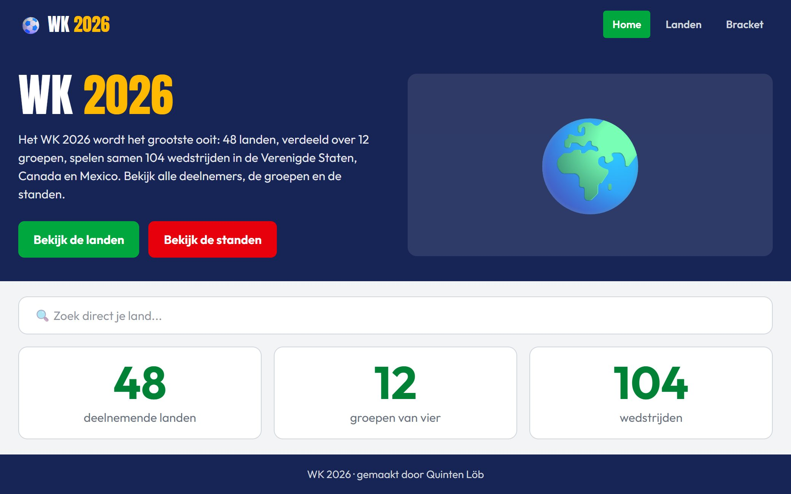

WK 2026
- Team
- Alleen gemaakt
- Gemaakt met
- PHP, SQLite, Tailwind CSS

Een website over het WK 2026 met alle 48 landen. Je kunt zoeken, filteren per groep en per land de wedstrijden bekijken. De groepsstanden rekent de site zelf uit op basis van de uitslagen in de database.
Ik heb de database ontworpen, de code opgesplitst in PHP-bestanden en views, de puntentelling geprogrammeerd en de site zelf online gezet op een Plesk-server.
Op het scherm: de voorpagina